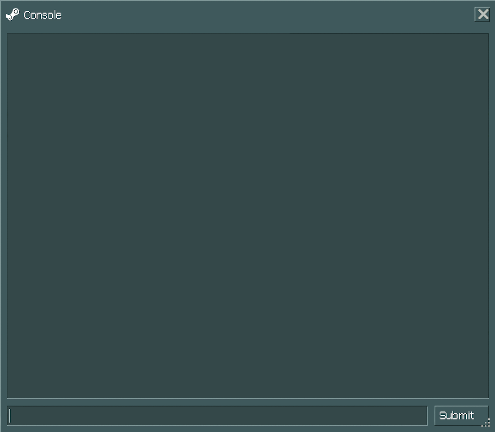

--------------------------------------1---------------------------------------
Most test subjects do experience some cognitive deterioration after a few months in suspension.
Now you’ve been under for…quite a lot longer, and it’s not out of the question that you might have a very minor case of serious brain damage.
But don’t be alarmed, alright?
Although, if you do feel alarmed, try to hold onto that feeling because that is the proper reaction to being told you have brain damage.
--------------------------------------2---------------------------------------
*imitating a british accent* Hello!
--------------------------------------3---------------------------------------
*cough* Button.
--------------------------------------4---------------------------------------
*cough* Button. Button.
--------------------------------------5---------------------------------------
*cough cough* Pressthebutton.
--------------------------------------6---------------------------------------
*cough* PRESS THE BUTTON.
--------------------------------------7---------------------------------------
*cough* Press the button, would you?
--------------------------------------8---------------------------------------
Um. You've got a yacht. And... Boys! Loads of fellas. Hunky guys down there. Possibly even a boyfriend!
Who's to say at this stage. But, a lot of good looking fellas down there.
And, ah, a boy band as well! That haven't seen a woman in years. And they're not picky at all.
They don't care if you've got a bit of brain damage. If you've been running around sweating.
And... A farm! A pony farm! And... Just jump down, would ya?
--------------------------------------9---------------------------------------
Okay, listen, we should get our stories straight, alright?
If anyone asks—and no one's gonna ask, don't worry—but if anyone asks, tell them as far as you know, the last time you checked, everyone looked pretty much alive.
Alright? Not dead.
--------------------------------------10--------------------------------------
- Ooagh!
--------------------------------------11--------------------------------------
- GAH!
--------------------------------------12--------------------------------------
Oh! You came back! Didn't actually plan...for that. Can't actually reset the death trap. So. Ah.
Could you jump into that pit, there? Would you just jump into that pit for me?
--------------------------------------13--------------------------------------
Could you just jump into that pit? There. That deadly pit.
--------------------------------------14--------------------------------------
You're saying to yourself, why should I jump into the pit? I'll tell you why. Guess who's down there? Your parents!
You're not adopted after all! It's your natural parents down there in the pit.
Should have mentioned it before.
But I didn't. So jump on down and reunite with mommy and daddy.
--------------------------------------15--------------------------------------
Oh! Oh oh! Yes. Alright. Just had a brainwave. I'll be back. If you're still alive.
I'll be back. Don't die until I get back.
--------------------------------------16--------------------------------------
If you're dying, but not dead, stomp once. If you're dead, obviously no stomps. And two stomps if you're not dead.
Lemme just run through that again: If you're dying but not dead stomp just once. If you're dead, obviously you won't be stomping.
And if you're not dead, give me two stomps.
--------------------------------------17--------------------------------------
A, A, A, A, A, A. [NNNT!] No. A, A, A, A, A, B. [NNNT!] Hold on, I've done both of these. Skip ahead. A, B, C... D, G, H.[DING!]